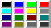
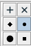
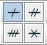
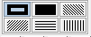

Modification du style de trait ou de la couleur d'un objet.
Pour choisir le style de trait des futurs objets créés ou modifiés, utilisez la palette  .
.
Pour choisir la couleur des futurs objets graphiques créés ou modifiés, cliquez sur une des couleur de la palette  ou utilisez la bouton de choix de couleur qui ouvre une boîte de dialogue de choix de couleur.
Pour choisir le stye de tracé des futurs points créés ou modifiés, utilisez la palette .
Pour choisir le style des futures marques de segments créées ou modifiées utilisez la palette .
Pour choisir le style de flèche utilisé pour les vecteurs ou les marques d'angles orientées, utilisez la palette  .
.
Pour choisir le style de remplissage pour les futures surfaces créées ou modifiées utilisez la palette .
Modification d'un objet graphiqué déjà créé.
Pour modifier un objet graphique, utilisez l'icône  puis cliquez sur l'objet.
puis cliquez sur l'objet.
Cela n'est possible que si l'objet a été créé via un menu.
Par exemple si vous avez créé l'image d'une droite par une rotation, en cliquant sur cet objet une boîte de dialogue s'ouvrira pour vous permettre de modifier l'angle de la rotation.
Created with the Personal Edition of HelpNDoc: Free help authoring environment